Sprites & Art
Now, I hear what some of you are thinking,
“Events and tilemaps are nice and all, but I don’t want them to look like they do. What if my mod takes place in the war-tattered wreckage of the Black Mesa Research Facility? How do I make that?”
Well, styling is a whole page's worth of detail, but I can tell you how to format that art from a technical viewpoint.
This page will detail the formatting for every image type used in OMORI.
Overworld Sprites
The majority of overworld sprites in OMORI are stored in the img/characters folder as spritesheets, hence they are also referred to as "Character Sprites." These are the images that Events can be set to use. Now before I show you all the ways these can be set up, I’ll show you how these work at a basic level.
This is the most basic spritesheet you can have in OMORI.
They are made up of eight 3*4 sets of sprites, all uniform in size. The size of the sprites between spritesheets can vary, as long as they follow this format. Each of these eight sets make up a pattern, as they are internally called. These patterns will have three sprites of movement in the four cardinal directions as pictured below. You don’t need to do anything to make the animations work aside from lining them up correctly.
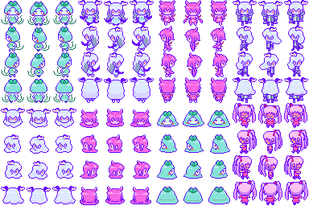
Now, as you can see here, Capt. Spaceboy’s spritesheet—while sized the same—has a few patterns that don’t follow this structure at all. Many spritesheets will also store character animations in the same sheet. These are called through scripts in the event coding.
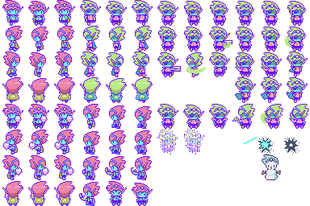
Now, this is actually just one of five ways that these sheets can be set up, and the way these formats are chosen is by their file name. RPG Maker MV and plugins will check the filenames of all loaded spritesheets to see how to split them. I will show you now what these look like.
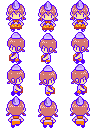
$ will be treated as having just one pattern rather than eight.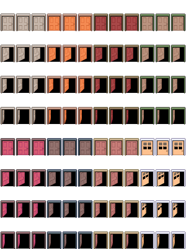
! to the beginning of a sheet disables this.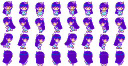
%(x) will have x walking frames as opposed to three. This only works with $ characters.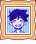
[SF] will be treated as one single frame rather than a full sheet.Dialogue & Battle Portraits
These made a brief mention in the Dialogue Section, but we might as well go slightly more in depth for sake of completeness. All dialogue portraits are stored in the img/faces folder and follow a very specific format that can't be deviated from.
Dialogue Facesets
Each image (as in png file) is a faceset containing four 106*106px faces per row, with a practically unlimited amount of columns.
Each face in the faceset has a number assigned to it, being its faceindex. These start at 0 and go left to right, top to bottom. This is how they are selected in the dialogue files.
As you can see, many dialogue sheets store multiple characters at once. In general, especially for larger mods, this can help a lot to cut down on the number of images you have in your faces folder, though ultimately it's your preference.
If you have trouble keeping track of what index each face has, a good practice is to add black numbers in the corner of each slot that state the number. Since they are black they will not be visible against the in-game text box.
This method does not work with custom windowskins, like the ones seen in mods such as BROKEN DREAMS or REWRITTEN.
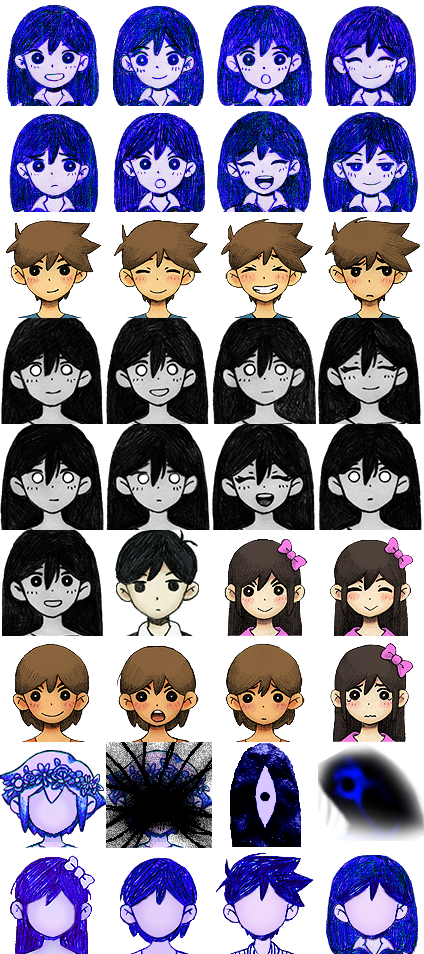
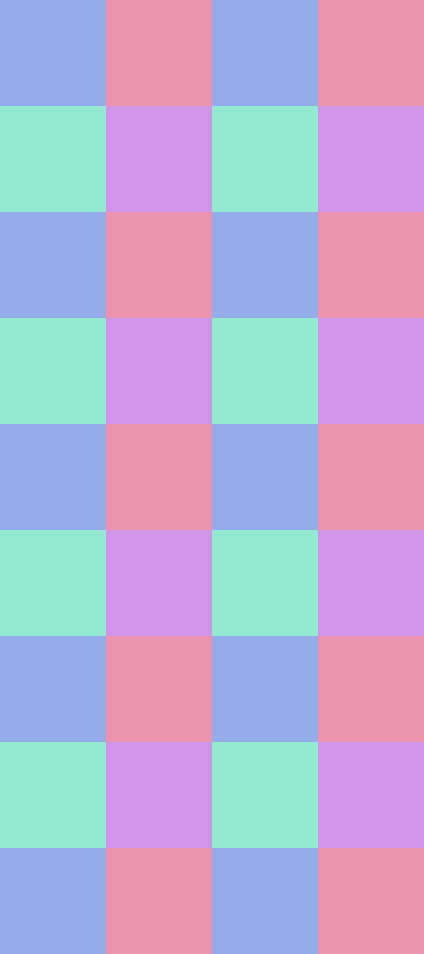
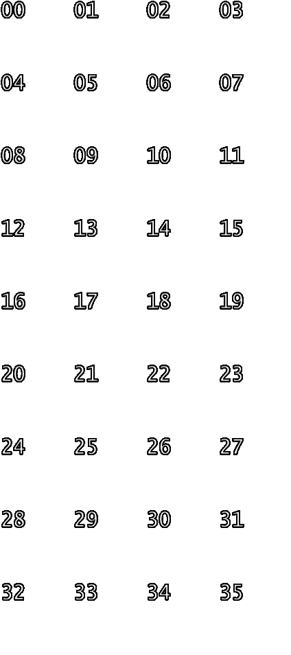
Battle Facesets
Battle portraits operate very similarly to dialogue portraits are also 106*106px.
Unlike dialogue portraits though, battle portraits are stored in rows of three, each row being the frames of animation used for a specific emotion. They will loop from left to right.
The rows used for each emotion are coded into the states, so if you are making new sheets, you must follow this format:
- Neutral
- Happy
- Ecstatic
- Afraid & Plot Armor
- Sad
- Depressed
- Angry
- Enraged
- Unconscious
- Hurt
- Victory
- Manic
- Miserable
- Furious
- Stressed Out
If you want more emotions you must extend the faceset lower down by adding more rows.
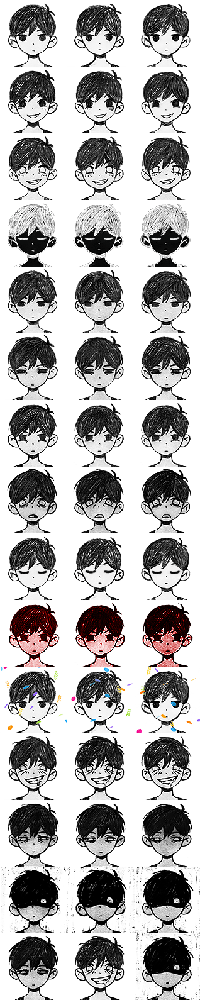
Enemy Battle Sprites
Enemy battle sprites are stored in two locations.
A single neutral frame of the enemy is stored in the img/enemies folder, while the full sheet is stored in the img/sv_actors folder.
The full sheet in the sv_actors folder operates similarly to the party battle portraits. Each row contains four sprites, however frame two and four are identical to make the animation look like 1,2,3,2,1 instead of 1,2,3,1.
Unlike the party members, the sprites called for each emotion are done manually by every enemy, so you can put them in any order you like. However, they will usually go:
- Neutral
- Hurt
- Defeat
- Sad
- Angry
- Happy
enemies sprite for the Lost Sprout Mole.
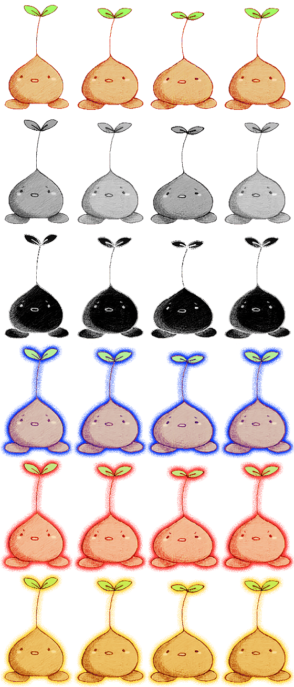
sv_actors sheet for the Lost Sprout Mole.Extra Tidbits
Some extra specifications that are best with an image example.
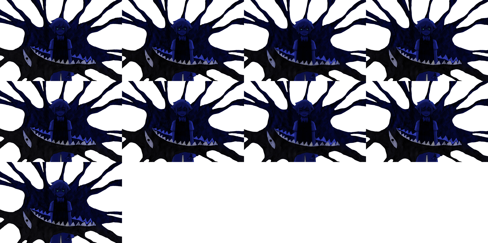
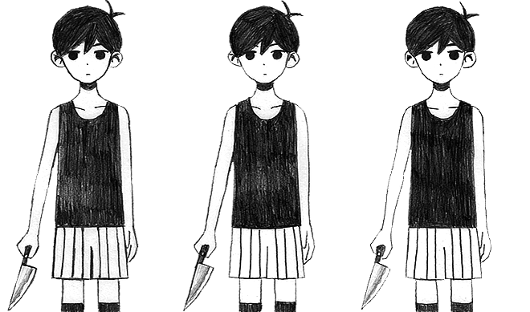
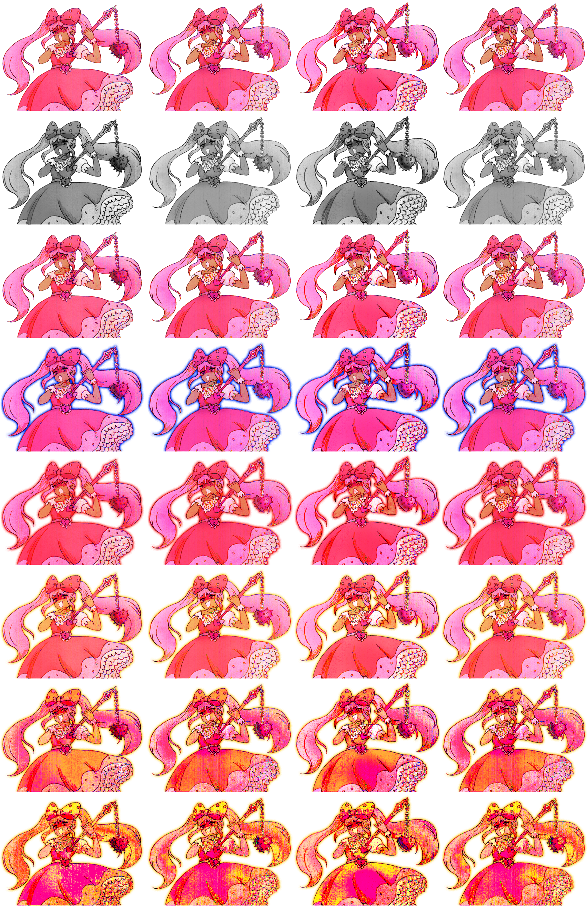
Battle Backgrounds
Battle backgrounds, or battlebacks as they are often called, are really easy to make. They are stored in the img/battlebacks1 folder.
Technically speaking, you may place any 640x480 image in the folder and it will be usable as a battleback; however, OMORI uses a very specific style for its battlebacks. Specifically, OMORI uses dithered stock photos for its battlebacks.
OMORI sources its photos from Pexels and Pixabay, which I would also recommend, as the photos are all free and watermarkless. Once you have your photo, you must crop and/or scale it down to 640*480px, and then place it through a dithering tool. Photoshop gives the most accurate results, but Dither it gives good results too.
What is dithering, though? It’s basically just reducing the color palette of the given image by using alternating pixels to mimic more shades. That makes the image retain its depth, but become small in file size. It also has a very specific, unique effect on images that frankly just sorta looks cool.
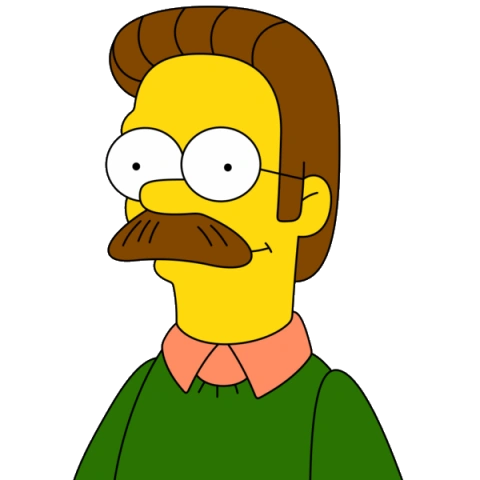
Tilesets
Tilesets feature all the tiles and props used in OMORI's maps. They are sheets stored in the img/tilesets folder.
Most of OMORI's tilesets are 1024*1024px, which is the maximum size available. Each individual tile is 32*32px, while some larger props using multiple tiles, like trees. Tiles can be animated with a looping animation of other tiles on the sheet, which is explained in detail in the Mapping Section.
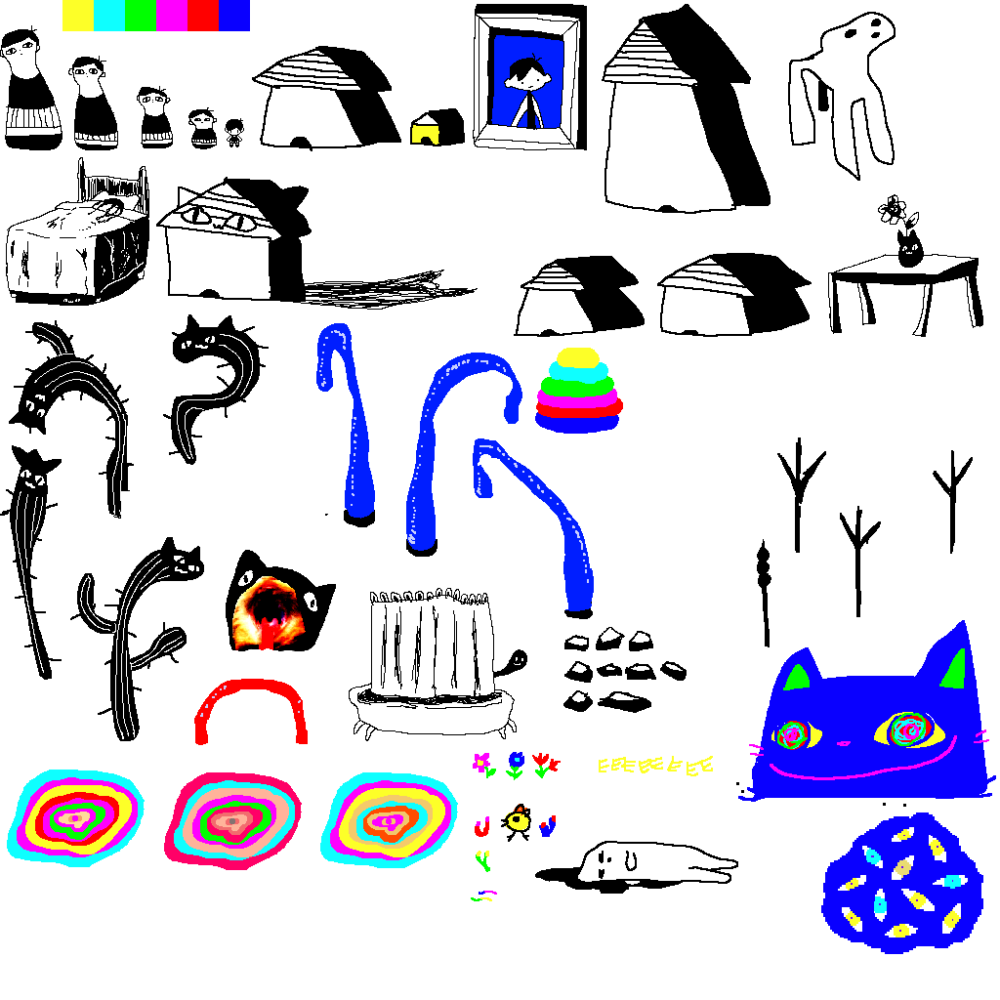
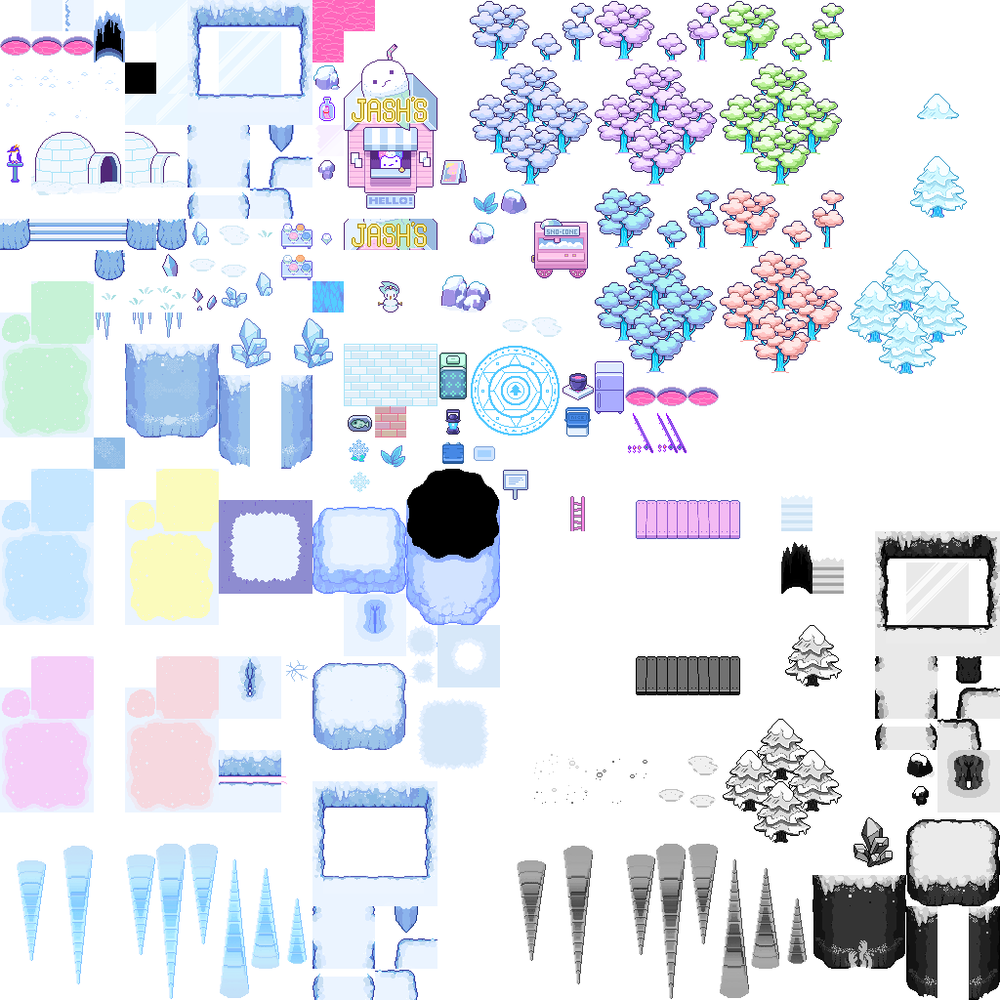
Tilesets
Tilesets feature all the tiles and props used in OMORI's maps. They are sheets stored in the img/tilesets folder.
Parallaxes are primarily used for the sky in Headspace and Faraway, and also as backgrounds for Black Space maps. They can be set by the map to loop and scroll on both the X and Y axis seperately. Looping parallaxes of course, generally should have seamless edges.
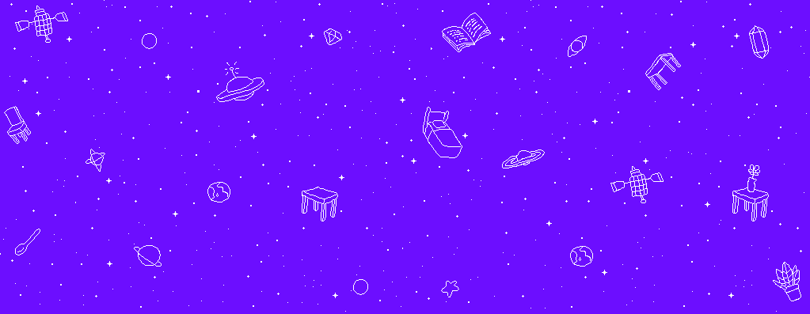
The only additional specification for parallaxes is that parallaxes beginning with a ! are set as Zero Parallaxes, which ties their position to the map as opposed to the camera. This can be useful if you want the sky to look more realistic usually, espeically if you're using a real photo. In addition its useful for backdrops of maps, as seen here with one of the many oceans in Black Space 2. Parallaxes can also be used for loading a map into the editor to make it easier to place events in the right places, but that’s discussed in more detail in the Mapping Section.
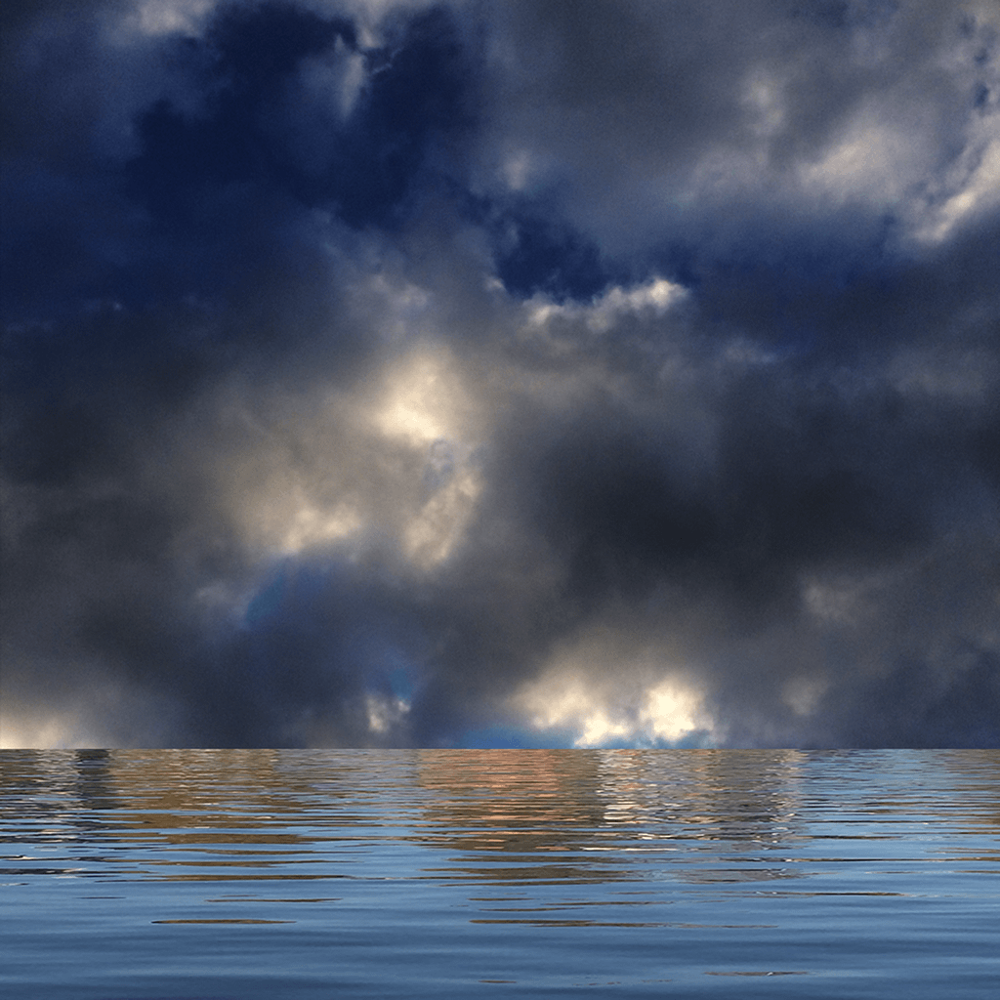
Pictures
Pictures are images stored in img/pictures that will appear on top of the screen and can be controlled in a few different ways. Pictures get used for various purposes, but generally can be boiled down to images that appear above the world for one reason or another.
This includes but is not limited to:
Cutscenes
These pictures are often the entire cutscene or a segment of it arranged in a grid. These get animated using the Custom Picture Frame scripts detailed in the Events Section.
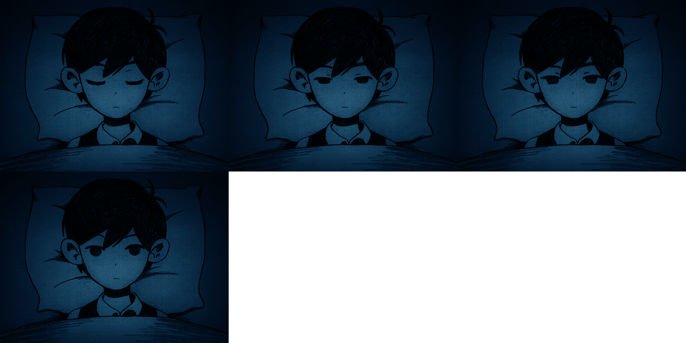
Art Popups
These are effectively the Picture equivalents to the Character Sheets comprised of misc. objects in the world. These popups usually use Custom Picture Frame scripting but technically can just be spawned with specific coordinates.
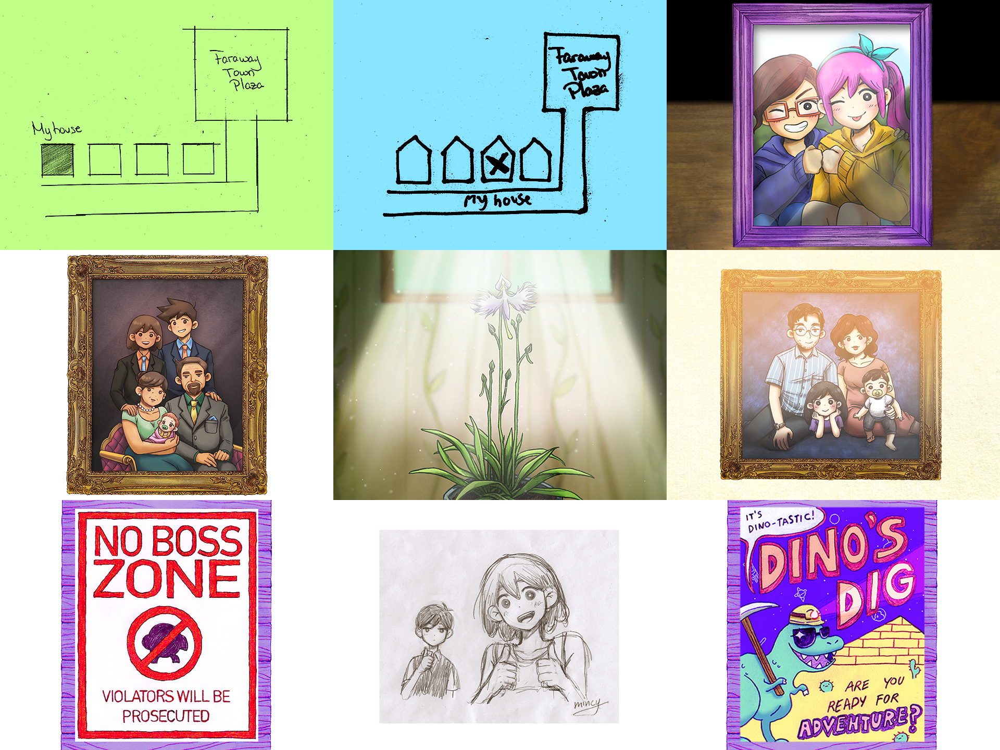
Lighting Overlays
Lighting overlays are incredibly powerful. With the use of Blend Modes, these images can do a lot of work in changing the tone of an area, literally.
Transitions
Pictures are very good ways to make dynamic transitions, such as the ones you see before battle. Pre-taken screenshots of the overworld can also be used to fade between scenes without cutting to black, such as in the backstage before the Final Omori fight, which does use a picture to achieve the fade between the color and dark versions of the map.
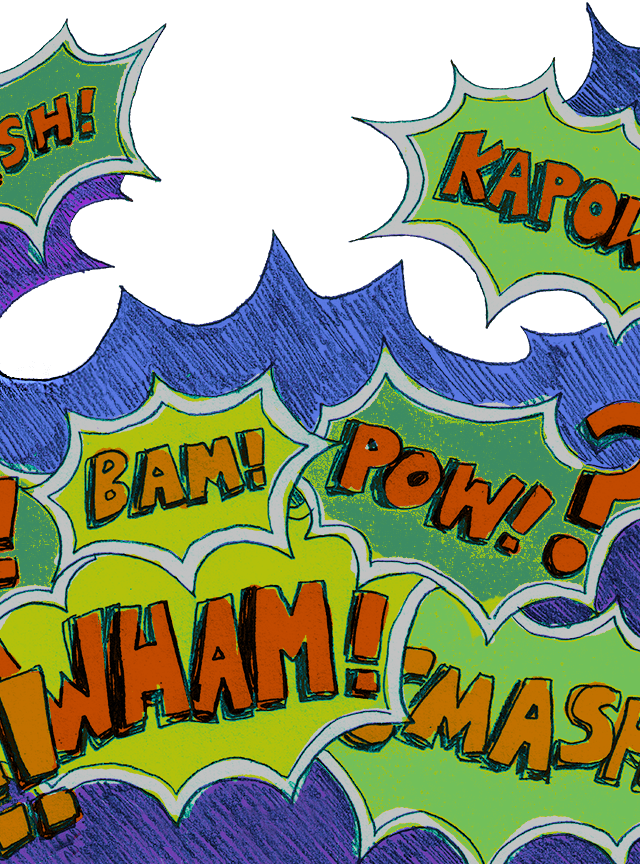
Lastly! Pictures can be ‘pinned’ to the center of the current map. And because pictures with an ID of 1 display below the player and events, this means that you can make a map be a picture, and display it that way. This can also be used for more complex map specific overlays.
This is detailed in the Event Section.
Item Icons
These icons in base game are found in the img/system folder, in a set of sheets called itemCharms, itemConsumables, itemImportant, and itemWeapons. While itemWeapon and itemWeapons are identical, itemWeapons is the used version.
As the names suggest, each sheet is used for a specific type of item. Depending on what the item is marked as in game, it calls the image from that specific sheet.
Item icons are 108*108px, and can be organized in any way as long as the sheet is a fixed width and fits a whole number of icons in a single row. This is especially clear when looking at base game's sheets, which are a mix of 7, 8, or 9 icons across. The height of the sheet can be extended indefinitely, allowing you to add as many rows as you want.
Stylistically, they are always white pencil on black background in base game, but realistically they can be anything that you want them to look like.
As mentioned above, the sheets used are preset by the basegame, but using basegame's method can be difficult and unrealistic. Instead, using the plugin Stahl_AltItemIcon, you can just specify the name of the sheet and then the index, enabling you to get any icon regardless of what type of item it is, and use images beyond the four listed above, which is very useful for modded items.
Something to keep in mind, though, is that icons are compressed and rescaled in order to fit where the game wants them to fit. Therefore, using a pixel sprite as an icon won't work without it being blurred. If using a pixel sprite is something that you want to do, you can use the plugin FD_ItemIconRescale to create an icon sheet that will not be resized.
Please note, it has not been tested with shop icons and may not work if the item is put in an in-game shop. Contact FruitDragon, the author of the plugin and owner of this document, for assistance.
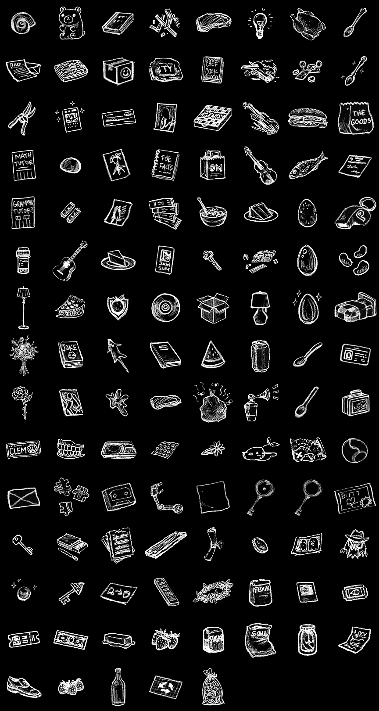
Windowskins
If you’ve ever played BROKEN DREAMS, HIKITO, OMORI.exe, or many other mods, then you’ve seen Windowskins in use. These are images in img/system that determine the appearance of the various windows in the game, such as text boxes and menus.
Here we can see the anatomy of the windowskins. We’ll start at the top left. This 96*96px square is the back of the windowskin, and is stretched to fit the size of whatever window there is. Due to the stretching, detailed images will get distorted and blurred, so instead, colors and gradients are the best fit for the background of a windowskin.
To the right of the background is the frame and arrows. The frame consists of 4 sides and 4 corners, which get tiled to create the border. These do not get distorted. While most windowskins are 5 pixels thick, it can go up to 24 pixels. Designs can also be added to the corners, but may get messy on smaller windows, like the name box.
The arrows are used for menus to indicate that scrolling is possible. They fit within the gray rectangles seen in the guide image. They do not stretch.
In the bottom left of the image is a tiling pattern. This a 96*96px sprite that will be overlaid on top of the background and tiled across the window. This is how stuff like the stars on the example windowskin work. It’s recommended for these to be partially transparent.
The cursor and pause sign, which can be seen in the top half of the bottom right quadrant, will very rarely if ever be seen in OMORI, but for completion I will explain them both.
For menus that do not use the Red Hands cursor icon to select an option, the game may default back to the normal RPG Maker MV method of showing the cursor, which is with this section of the windowskin. It will be stretched akin to the background across the option, and fade in and out over about a second.
Meanwhile, the pause symbol is a 24*24px animated icon that would appear in place of the Red Hands when waiting for the player’s input in a message window. This goes completely unused, and therefore so does this section of the windowskin.
Lastly, the colors! A grid of 32 12*12px squares make up the list of colors that can be used for text via that windowskin. To be more precise, the game uses the (7,7)th pixel, outlined in the guide image, to determine the color, allowing the other pixels to be used for whatever, such as marking the index number. It’s worth noting that changing windowskins can cause issues with these colors, so caution is advised.
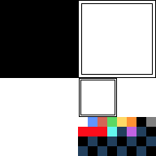
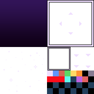
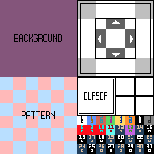
Troubleshooting
Normally, you can’t (easily) change the windowskin. So instead, mods use the HIME_WindowskinChange plugin. From here, the script $gameSystem.setWindowskin(“NAME”); can be used to change the windowskin.
Now, there are many caveats to this that I’m going to rattle off common errors that windowskins can have. If applicable, a solution will be provided.
- "Changing the windowskin every time a character talks is a hassle."
- Using WN_ExtendedYAML or preferably DoubleExtendedYAML will allow setting windowskins in the YAML directly, bypassing this.
- "Changing the windowskin for a message will apply it to the main menu or some other place I don’t want."
- Using TR_RestrictiveWindowskins enables you to control which windows are modified by the windowskin change.
- "The text colors aren't updating."
- Using BABY_ExternalColorImage should fix it, but might not always.
- "I need more than 32 colors."
- Using BABY_ExternalColorImage gives you 288. That should be enough for you.
- "My windowskin isn’t working in retail/I have text that’s black in retail."
- Make sure BundleTool is updated. Patching the base
Window.pngused to be a problem, but should be fixed now. If the issue persists, simply create a different file to use as the default window.
Movies
Unlike other image types, these are actual video files, and are not stored in img/ but rather movies/. They are used in scenes with too many moving elements or effects that are not feasible in-game, or cutscenes with extensive music syncing, which often is inconsistent in real time.
Atlases
Lastly, we have Atlases. These guys are pretty weird but they are also extremely useful, and I’d be remiss to exclude the most complex image type in OMORI.
Atlases are, in basic terms, spritesheets. They are larger images that are composed of multiple smaller images, usually laid out in a grid or other format. These sheets are then broken up by the engine into individual images that can be called separately.
Let’s take a look at one from the basegame to better explain:
This is the atlas that stores the sprites for the Title Screen! Looking through here, you can see both Omoris, Sunny, and whichever the title text and lightbulb. Now let’s see what actually breaks down this image.
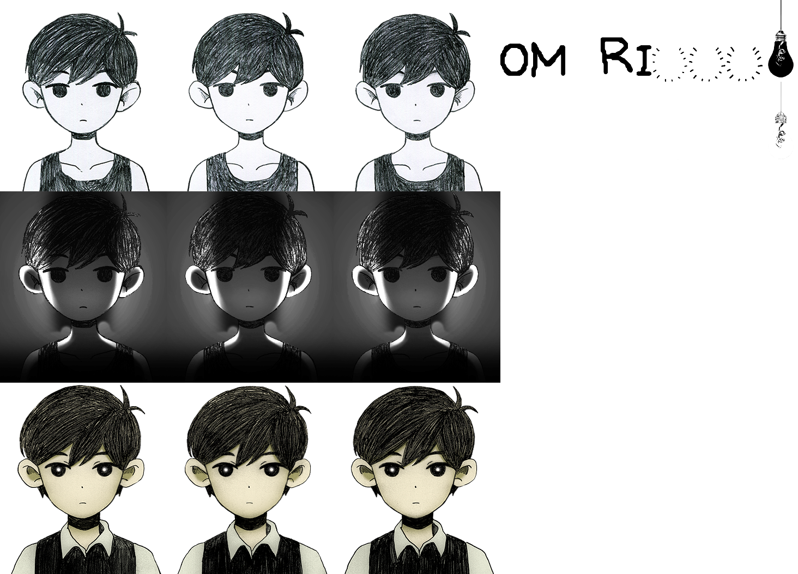
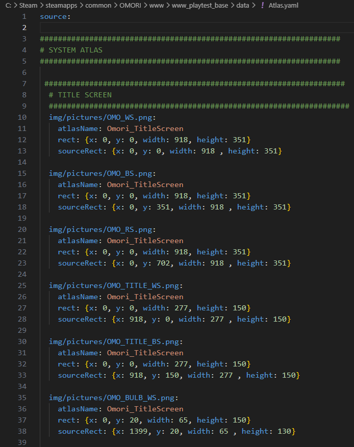
Heading over to your playtest’s data/ folder, you’ll find a file called Atlas.yaml. Open it up in your editor of choice (VsCode is displayed here) and you’ll be greeted with this sight.
Firstly, all of these are indented inside of the source: line. To avoid getting especially technical, if a line is indented inside another, the indented line can be called from the higher one in code. Therefore, the game needs all of these to be indented inside of source:.
Now for the actual images.
Conveniently, the title screen is the first image in the list, so we won’t have to scroll to analyze it.
The first line is the file path of the image you’re creating, including all folders and the file extension, which is .png.
This will also therefore be the filename used when actually playing the game, so remember it.
The following lines are then indented inside of the filename.
atlasName: This is the name of the full atlas image in img/atlases.
rect: The x and y are the coordinates of where the top left of the full atlas image will be positioned in the new image. The width and height are the size of the new image. If this sounds confusing, just set x and x to 0 and the width and height to the size of the image.
sourceRect:: The x and y are the coordinates of the top left of the image in the full atlas. width and height are self-explanatory.
If you did it all correctly, then you can now use these images whenever you like in game, as they behave just like any other. However, there are of course some notes.
These images will not appear in the editor, so if you’re using the editor to select your image, it will not appear. This means that these are best used for images that are called by notetags or scripts, such as facesets or badges.
Here’s an example of them being used for the State Icons of Parallels.
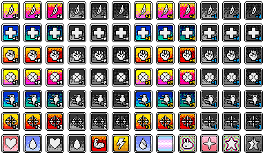
When adding a new atlas, it's a good idea to get the Stahl_AtlasExtended plugin and create a new atlas instead of editing the base game's Atlas.yaml. This is because the base game atlas is very useful as reference, and due to its syntax being extremely easy to mess up, it's easier to simply leave it as reference and not modify it if it can be avoided. That way, you'll have a file to reference in case things go wrong with your atlas. Additionally, it's useful for making mods intercompatible.
Other images that are atlased in base game include almost all of the assets of the various photo albums, a variety of UI assets for battles and such, tag photos, and Omori's sketchbooks. They can all be found in the img/atlases folder.